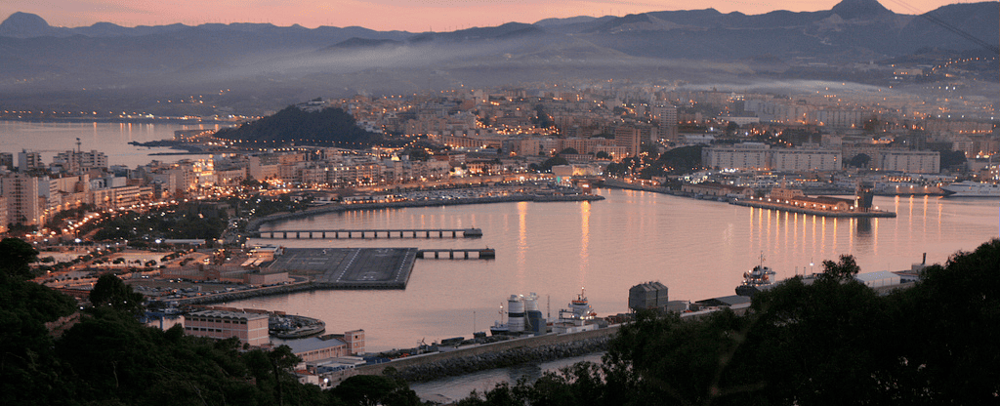
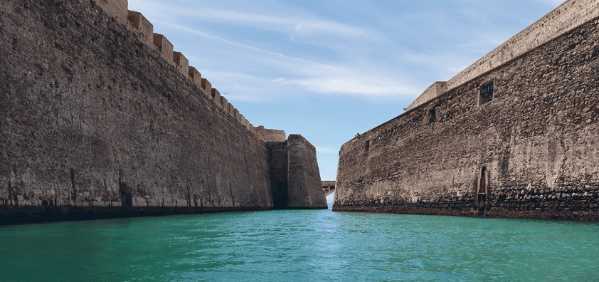

Una ciudad abierta que une dos continentes y en la que se mezclan cuatro culturas distintas: la cristiana, la musulmana, la hindú y la judía.
Hay que visitar las Murallas Reales y el Parque Marítimo del Mediterráneo. Y, si eres aficionado al deporte náutico, disfrutarás de la costa de Ceuta. Podrás navegar en kayak, visitar la ciudad en embarcación de recreo, pescar o avistar tortugas, delfines y ballenas. Aunque quienes más frecuentan su litoral son quienes practican el submarinismo, ya que en sus aguas confluyen el océano Atlántico y el mar Mediterráneo y eso propicia la regeneración constante de su flora y fauna.

Murallas Reales
Se trata de una fortificación abalaustrada compuesta por varias líneas defensivas, fosos, espigones y galerías. Fueron levantadas en época medieval, dado el carácter que tiene Ceuta de ciudad-frontera.
Con la conquista portuguesa se construyeron dos lienzos de la Muralla Real y sus baluartes, con un foso navegable y un puente levadizo. En la actualidad permanecen los baluartes de la Coraza Alta, de la Bandera y de los Mallorquines.

Parque Marítimo del Mediterráneo
El Parque Marítimo del Mediterráneo es la obra póstuma de César Manrique. Se comenzó en 1992 finalizándose dos años más tarde. Tiene características similares a las del lago Martiánez del Puerto de la Cruz.
El parque ocupa una superficie de unos 56.000 m2 y alberga lagos de agua salada, solariums, jardines e instalaciones de servicios. En el centro del mismo destaca un castillo inspirado en las murallas de Ceuta. Acoge un casino, un restaurante y una discoteca. Junto al Parque Marítimo está ubicado un puerto deportivo.